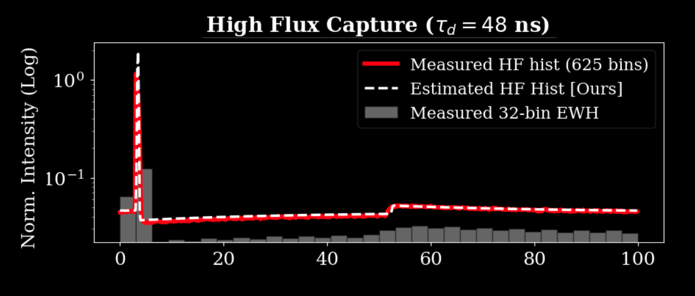
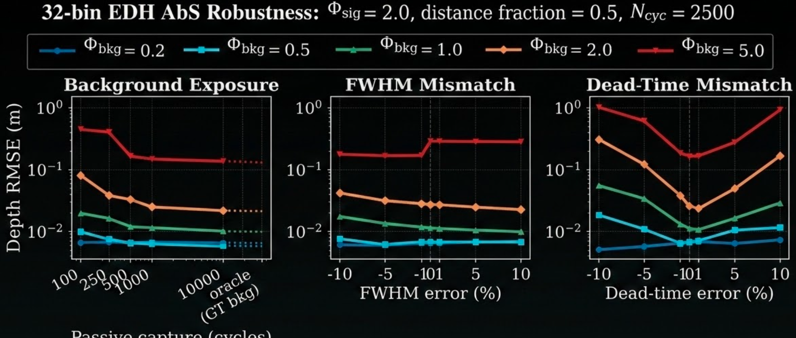

High-Flux Count-Free Single-Photon 3D Cameras
Abstract
Single-photon cameras based on single-photon avalanche diode (SPAD) technology are gaining popularity for 3D sensing, thanks to their extreme sensitivity and time resolution. There are two key challenges with single-photon cameras that limit their widespread use: (i) they suffer from non-linear distortions called ``pile-up'' when operated in high-photon-flux conditions, and (ii) they generate a large volume of raw photon data, creating a severe data bottleneck at each sensor pixel. In this work, we show that while compressive capture techniques successfully mitigate data transfer challenges, they exacerbate the effects of dead-time distortion because they fail to retain sufficient information about the photon detection history to allow post-processing pile-up correction via existing methods. We propose a new computational-imaging method that combines free-running capture with an analysis-by-synthesis software pipeline to mitigate pile-up distortions. Our results with hardware emulations and full-scene and single-pixel simulations show that our method can reliably capture scene distance and reflectance over a wide range of illumination conditions. Our work will enable high-resolution SPAD cameras that are severely bandwidth-constrained to operate in real-world high-flux scenarios.

Results on 3D scenes with multi-path interference from iToF2dToF dataset. We compare our EDH-based AbS method with standard baselines that use Equi Width Histograms (EWH) and a histogramless approach. Considering resource-constrained scenarios, we keep the number of EWH bins and EDH bins equal for comparison. Quantitative results: mean error (ME, in meters), standard deviation (SD, in meters), and 1% inlier rate (1%in)—are reported beneath each result. As shown, our proposed method significantly reduces distance artifacts and outperforms the baselines. Additionally, we show recovered transients for some selected pixels from each scene, demonstrating how, despite the presence of multi- path interference, our method is able to converge closer to the largest peak in most scenarios.

Effect of dead-time distortion on EDH SPCs. In the absence of dead-time distortions, a compressive capture from a 32-bin EDH provides reliable estimates of the true scene distances. For a realistic dead-time of τd = 75 ns, the scene distance estimates are severely corrupted by pile-up. Due to the non-linearity of pile-up distortions, statistical averaging by increasing the capture time does not help.

Effect of dead-time on SPC measurements. (a) In case of no dead-time, the binner tracks the median of the photon arrivals, but in case of dead-time, the binner tracks just the detections and suffers from a negative bias due to dead-time distortion. (b) When dead-time = 0, the narrowest bin tracks the peak, but in the presence of dead-time, the narrowest bin no longer tracks the peak of the photon arrivals.

Markov chain model for an equi-depth histogrammer. (a) The photon detection stream lives on a discrete state space with B possible locations; the binner control value lives on a state space of B + 1 possible locations. The discrete photon detection times can be described using a Markov chain [11]. (b) A binner’s control value is incremented or decremented with some probability that is tied to the photon detection probabilities relative to the current control-value position. The binner’s control value, therefore, follows another Markov chain, which is driven by the Markov chain of photon detections. (c) An EDH consists of a bank of binners, each tracking a different quantile (shown by vertical dashed lines) of the perceived transient distribution, which may be different from the true transient distribution due to dead-time distortion. The binners converge to their respective stationary distributions that are centered around the actual quantiles.

Three stages of the analysis-by-synthesis (AbS) pipeline. (1) Initialization stage uses SPC measurement Mq and background flux Φbkg estimated from passive capture. We also apply a spatial 3 × 3 median filter to reduce noise in the initial distance estimate. (2) The optimization stage minimizes a loss function to obtain model parameters that best explain the observed EDH data. (3) A postprocessing stage applies a 3x3 median filter on the distance estimate and effective signal estimate to get the final outputs.

AbS robustness to non-ideal transients in real hardware data. Our AbS pipeline can handle non-ideal transients such as single-pixel transients from real hardware data. Observe that given the emulated EDH boundaries (vertical lines), there is good agreement between the actual perceived transient and the estimate in both (a) high flux (HF) conditions and (b) low flux (LF). In high-flux conditions, our method reliably predicts the within-peak pile-up and also the “peak shadow” (the dip in the transient’s shape) that immediately follows the peak location, and spans a variable number of time locations depending on the dead-time.
